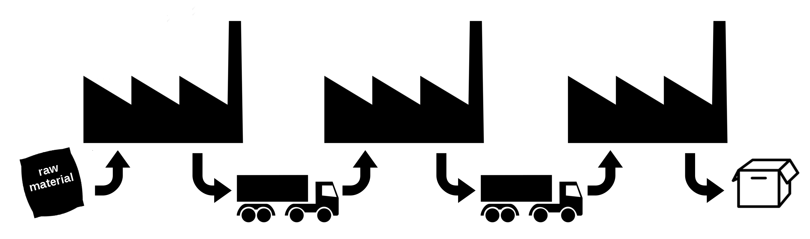

The Travelling Thief Problem (TTP) is a recent benchmark optimization problem that combines the Travelling Salesman Problem and the 0/1-Knapsack Problem in order to provide a more realistic model. Interactions between TSP and KP are introduced in order to simulate the interdependence between components in real-world problems.
The goal of this project is to: (1) propose a realistic and abstract model for material flow through a multi-plant supply chain (machine scheduling, storage management, production cost, etc); and (2) study the dependencies between the different components of the model.

The idea was initiated by Dr. Mohammad Reza Bonyadi who developed an abstract model for the Multi-component Job Shop Scheduling Problem (MJSSP). I am currently working with Dr. Bonyadi and my PhD supervisor Pr. Belaïd Ahiod on studying and improving the models initially developed.